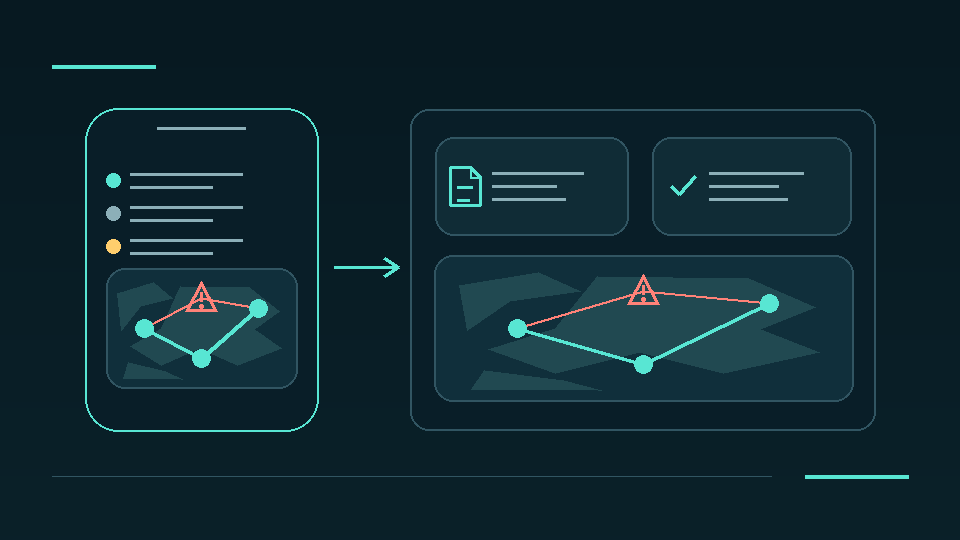
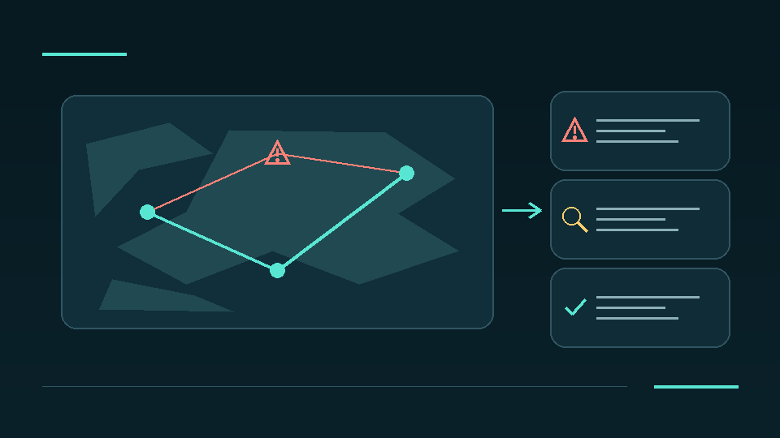

使用 Codex 可以构建什么？
从具体任务开始，或继续开发已有产品。以下示例展示典型工作流程的输入、决策与结果。
- 关联的工作区
- My Day
- Sunridge Studio
- 对话助手
- Global Logistics
- 从表格到文档
- 用于重复任务的专员
- 有证据的信息检索
- 评估实际工作流程
- Agent Atelier 工作台
- 产品生命周期
- 延续同一个项目
- 你的下一项任务
这些产品概念展示了系统的一部分用途。我们保留了原画中的文字。请在仓库首页查看当前发布版本。
登录 GitHub 并打开 main 分支的一次成功验证。在 Artifacts 中下载 product-showcase，再解压 Showcase.zip 并打开 index.html。
关联的工作区
原版产品概念图 · 英文原画

补充封面

My Day
原版产品概念图 · 英文原画

技术流程

Sunridge Studio
原版产品概念图 · 英文原画

技术流程

对话助手
原版产品概念图 · 英文原画

技术流程

Global Logistics
原版产品概念图 · 英文原画

技术流程

从表格到文档
原版产品概念图 · 英文原画

技术流程

用于重复任务的专员
原版产品概念图 · 英文原画

技术流程

有证据的信息检索

评估实际工作流程

Agent Atelier 工作台

更多概念图
产品生命周期
原版产品概念图 · 英文原画

延续同一个项目
原版产品概念图 · 英文原画

你的下一项任务
原版产品概念图 · 英文原画